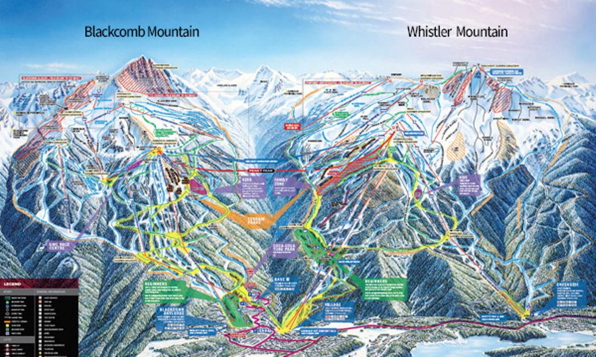

Mountain Runs
Whistler and Blackcomb are two side-by-side mountains which offer over 200 marked runs, 8,171 acres of terrain, 16 alpine bowls, and 3 glaciers combined. In the summer, Whistler Blackcomb offers a variety of activities including hiking and biking trails, the Whistler Mountain Bike Park, and sightseeing on the PEAK 2 PEAK Gondola.1
Ski Lessons

Rent the highest quality ski and snowboard equipment from premium brands and get personalized gear selections by our expert team. Book online for the best price, and get an extra 20% off as an Epic Pass Holder with Epic Mountain Rewards.2